Paneer Biryani Recipe (Easy Dum Method)
Paneer Biryani is a traditional, dum-cooked vegetarian biryani made by layering yogurt-marinated paneer with par-cooked basmati rice, fried onions (birista), herbs, saffron milk and ghee. Mildly spiced and delicately flavored, it’s a hearty one-pot dish that pairs perfectly with raita. Though it takes time to prepare, the result is always worth it – flavorful, filling, and simply irresistible. Cook it on the stovetop or in the oven.
How to make Paneer Biryani
Soak Rice & Fry Onions
1. Rinse 1 cup basmati rice very well in running fresh water until the starch clears from the water.
The water should be clear and not cloudy or opaque. Soak the rice grains in water for 30 minutes.
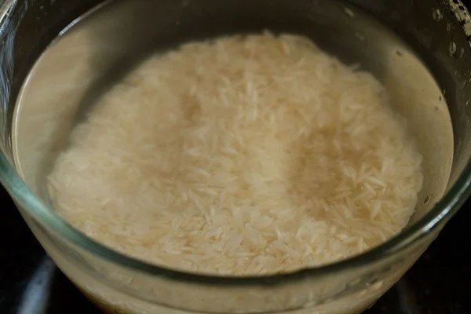2. While the rice is soaking, prep the ingredients for the biryani. Thinly slice 2 medium onions. You will need about ¾ to 1 cup sliced onions.
Heat 4 tablespoons oil or ghee in a small frying pan and add the sliced onions.
3. Stir and begin to fry the onions on low heat until golden. Add 1 or 2 pinches of salt for quick browning of the onions. Stir often, for uniform browning.
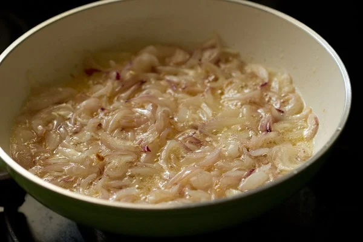4. In the picture below, the onions have begun to turn golden.
5. When the onions are golden and caramelized, remove with a slotted spoon. Place the fried onions on kitchen paper towel and keep aside.
These crispy golden fried onions are also known as birista.
Keep the oil or ghee in which we fried the onions aside. We will be using this oil or ghee while layering the biryani.
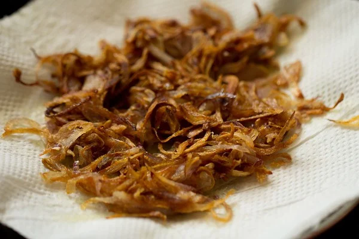6. Warm ¼ cup milk on stovetop or in the microwave. Add 16 to 18 saffron strands to the milk. Stir and keep aside.
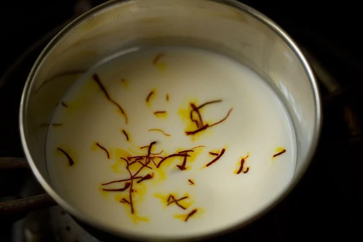Make Marinade
7. Whisk ½ cup whole milk curd (yogurt) in a mixing bowl until smooth.
Do not use sour curd as it will make your biryani taste sour.
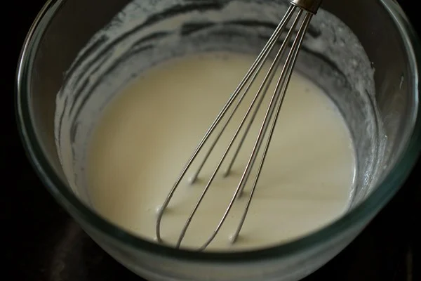8. Add the following and mix well:
*1 teaspoon ginger paste
*1 teaspoon garlic paste
*1 teaspoon chopped green chilies
*1 tablespoon chopped coriander leaves
*½ tablespoon chopped mint leaves
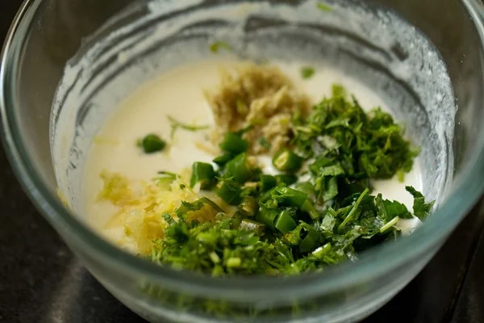9. Add in the following spices and mix again:
*¼ teaspoon of turmeric powder (ground turmeric)
*¼ teaspoon caraway seeds (known as shahi jeera in Hindi)
*¼ teaspoon red chili powder or cayenne pepper
*¼ teaspoon of garam masala powder (subtitute ½ teaspoon curry powder instead)
*½ teaspoon coriander powder (ground coriander)
*1 teaspoon lemon juice
*1 teaspoon lemon juice
10. Add half of the fried onions and 200 to 250 grams cubed paneer.
11. Mix gently. Cover and keep the marinated paneer aside for 30 minutes at room temperature. If you plan to marinate for a longer time, keep the bowl covered in the refrigerator.
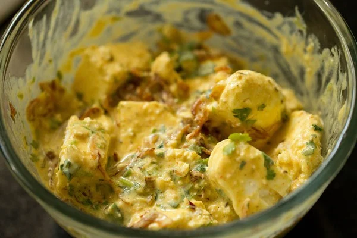Cook Basmati Rice
12. In the picture below, you see the soaked and drained basmati rice after 30 minutes. Drain all the water from the rice very well and keep aside.
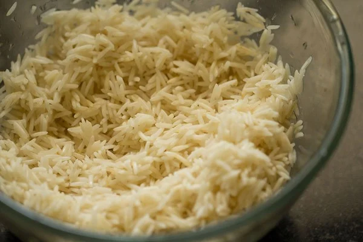13. Bring 4 cups water to a rolling boil in a pot.
14. Add the whole spices
15. Add 1 teaspoon salt.
16. Now, add the soaked rice.
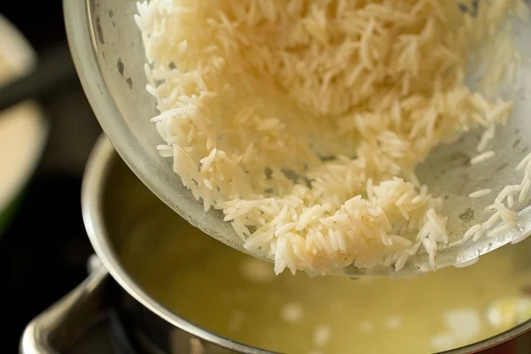17. Do not stir and you will see the temperature drops a bit after adding rice. Do not cover the pan while cooking rice.
18. Keep the heat to high and cook the rice without lowering the heat.
19. Boil the rice grains till 75% or ¾th cooked. It should have a bite when you eat.
20. Drain the cooked rice in a colander. You can rinse the rice grains gently to remove starch, if any, and to stop the grains from cooking.
Cover with a lid and keep the cooked basmati rice aside.
21. This is the marinated paneer after 30 minutes.
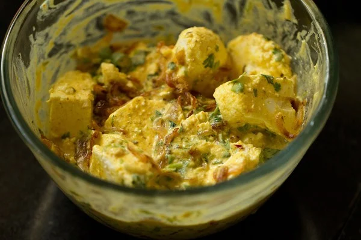Assemble & Layer
22. Add the same oil in which we fried the onions to a thick-bottomed pan or pot. If cooking the biryani in an oven, add the oil to an oven-safe glass bowl or pan.
23. Add the marinated paneer and layer neatly.
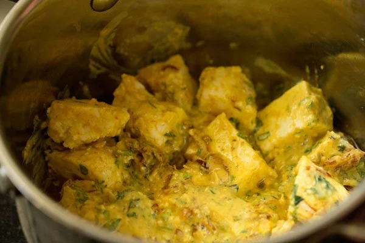24. Make a rice layer now. Add all the rice.
I have just made 2 layers. If you want, you can make 4 layers each of the marinated paneer and cooked rice.
25. Add the remaining fried onions.
26. Now, add 1 tablespoon chopped coriander leaves and ½ tablespoon chopped mint leaves.
27. Drizzle the prepared saffron milk all over. Place the saffron strands as well on the rice.
28. Dot with 1 to 2 tablespoons ghee.
You can also add 1 tablespoon rose water or kewra water at this step.
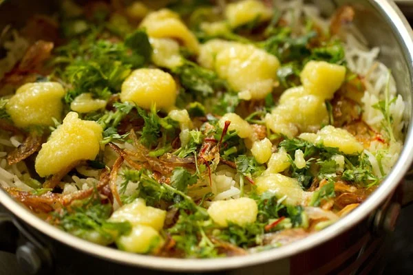Make Paneer Biryani
29. Cover with an aluminium foil or with a moist cotton kitchen napkin.
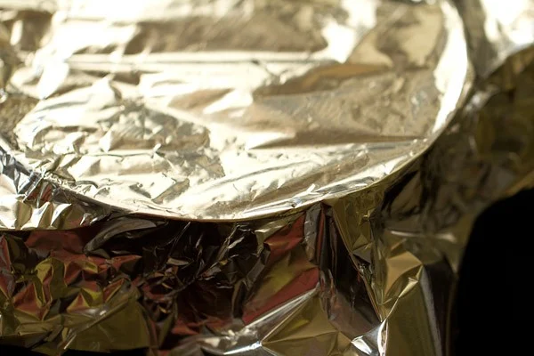30. Place the lid tightly on the pan and place it on a tawa or skillet.
31. For the first 5 minutes, dum cook the biryani on medium heat. Later, reduce the heat and cook on low heat for 12 to 15 minutes.
You can cook the biryani in a preheated oven for 20 to 25 minutes at 180 degrees C (350 degrees F).
32. Here’s the Paneer Biryani after being dum cooked for 20 minutes. Check the bottom with a spoon and there should be no liquids.
If you find the bottom of pan watery or with any gravy or liquid, dum cook for 5 to 10 minutes more.
33. Serve Paneer Biryani hot or warm with plain curd (yogurt), raita of your choice, salad or your favorite salan or curry.
Serving & Storage Suggestions
You can enjoy this lovely Paneer Biryani hot or warm with a raita like Onion Raita, Cucumber Raita or Boondi Raita. You can serve with sliced onion-lemon salad or Kachumber Salad too.
Pairing it with curries like Mirchi Ka Salan and Bagara Baingan also is awesome. Even a simple plain yogurt tastes nice with this biryani.